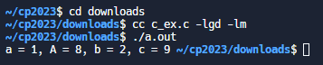

w15 <<
Previous Next >> Brython
ANSIC
姓名、出生日期和手機號碼
#include <stdio.h>
int main()
{
// 列印姓名
printf("Name : James II \n");
// 列印出生日期
printf("DOB : March 12, 2005\n");
// 列印手機號碼
printf("Mobile : 99-9999999999\n");
// 表示執行成功
return(0);
}

寫出 C 程式來計算高10英吋、寬10英吋的矩形的周長和面積
#include <stdio.h>
/*
Variables to store the width and height of a rectangle in inches
*/
int width;
int height;
int area; /* Variable to store the area of the rectangle */
int perimeter; /* Variable to store the perimeter of the rectangle */
int main() {
/* Assigning values to height and width */
height = 10;
width = 10;
/* Calculating the perimeter of the rectangle */
perimeter = 2*(height + width);
printf("Perimeter of the rectangle = %d inches\n", perimeter);
/* Calculating the area of the rectangle */
area = height * width;
printf("Area of the rectangle = %d square inches\n", area);
return(0);
}

反轉數字
#include <stdio.h>
// 定義反轉整數的函式
int reverse(int n) {
int d, y = 0;
while (n) {
d = n % 10;
// 檢查溢位情況，以確保反轉後的整數仍在 int 範圍內
if ((n > 0 && y > (0x7fffffff - d) / 10) ||
(n < 0 && y < ((signed)0x80000000 - d) / 10)) {
return 0; // 如果溢位，則返回 0
}
y = y * 10 + d;
n = n / 10;
}
return y; // 返回反轉後的整數
}
int main(void)
{
int i = 321;
printf("原始整數: %d ", i);
printf("\n反轉後的整數: %d ", reverse(i));
return 0;
}
日期轉換為年、週和日
#include <stdio.h>
int main()
{
int days, years, weeks;
days = 3569; // Total number of days
// Converts days to years, weeks and days
years = days/365; // Calculate years
weeks = (days % 365)/7; // Calculate weeks
days = days - ((years*365) + (weeks*7)); // Calculate remaining days
// Print the results
printf("Years: %d\n", years);
printf("Weeks: %d\n", weeks);
printf("Days: %d \n", days);
return 0;
}
總和
#include<stdio.h>
// 宣告函式原型
int sumOfRange(int);
int main()
{
int n1;
int sum;
// 提示用戶輸入範圍的最後一個數字
printf("\n\n 遞迴 : 計算從1到n的數字總和 :\n");
printf("-----------------------------------------------------------\n");
printf(" 輸入範圍的最後一個數字（起始數字為1） : ");
scanf("%d", &n1);
// 呼叫函式計算總和
sum = sumOfRange(n1);
printf("\n 1 到 %d 的數字總和 : %d\n\n", n1, sum);
return (0);
}
// 定義計算範圍內數字總和的函式
int sumOfRange(int n1)
{
int res;
if (n1 == 1)
{
return (1);
}
else
{
// 遞迴呼叫 sumOfRange 函式
res = n1 + sumOfRange(n1 - 1);
}
return (res);
}
列出前60個自然數
#include<stdio.h>
int numPrint(int);
int main()
{
int n = 1;
printf("\n\n Recursion : print first 50 natural numbers :\n");
printf("-------------------------------------------------\n");
printf(" The natural numbers are :");
numPrint(n);
printf("\n\n");
return 0;
}
int numPrint(int n)
{
if(n<=60)
{
printf(" %d ",n);
numPrint(n+1);
}
}
輸入年份產生日曆
#include <stdio.h>
#include <stdlib.h>
#include <string.h>
// 定義版面大小
int width = 40, year;
int cols, lead, gap;
// 星期幾
const char *wdays[] = { "Su", "Mo", "Tu", "We", "Th", "Fr", "Sa" };
// 每個月有幾天
struct months {
const char *name;
int days, start_wday, at;
} months[12] = {
{ "January", 31, 0, 0 },
{ "February", 28, 0, 0 },
{ "March", 31, 0, 0 },
{ "April", 30, 0, 0 },
{ "May", 31, 0, 0 },
{ "June", 30, 0, 0 },
{ "July", 31, 0, 0 },
{ "August", 31, 0, 0 },
{ "September", 30, 0, 0 },
{ "October", 31, 0, 0 },
{ "November", 30, 0, 0 },
{ "December", 31, 0, 0 }
};
// 間距
void space(int n) { while (n-- > 0) putchar(' '); }
// 初始化月份資訊
void init_months()
{
int i;
// 判斷閏年
if ((!(year % 4) && (year % 100)) || !(year % 400))
months[1].days = 29;
// 計算每個月份的起始星期幾
year--;
months[0].start_wday = (year * 365 + year/4 - year/100 + year/400 + 1) % 7;
for (i = 1; i < 12; i++)
months[i].start_wday = (months[i-1].start_wday + months[i-1].days) % 7;
// 計算列數和間距
cols = (width + 2) / 22;
while (12 % cols) cols--;
gap = cols - 1 ? (width - 20 * cols) / (cols - 1) : 0;
if (gap > 4) gap = 4;
lead = (width - (20 + gap) * cols + gap + 1) / 2;
year++;
}
// 輸出日曆
void print_row(int row)
{
int c, i, from = row * cols, to = from + cols;
// 輸出月份
space(lead);
for (c = from; c < to; c++) {
i = strlen(months[c].name);
space((20 - i)/2);
printf("%s", months[c].name);
space(20 - i - (20 - i)/2 + ((c == to - 1) ? 0 : gap));
}
putchar('\n');
// 輸出星期幾
space(lead);
for (c = from; c < to; c++) {
for (i = 0; i < 7; i++)
printf("%s%s", wdays[i], i == 6 ? "" : " ");
if (c < to - 1) space(gap);
else putchar('\n');
}
// 輸出日期
while (1) {
for (c = from; c < to; c++)
if (months[c].at < months[c].days) break;
if (c == to) break;
space(lead);
for (c = from; c < to; c++) {
for (i = 0; i < months[c].start_wday; i++) space(3);
while(i++ < 7 && months[c].at < months[c].days) {
printf("%2d", ++months[c].at);
if (i < 7 || c < to - 1) putchar(' ');
}
while (i++ <= 7 && c < to - 1) space(3);
if (c < to - 1) space(gap - 1);
months[c].start_wday = 0;
}
putchar('\n');
}
putchar('\n');
}
// 輸出整年的日曆
void print_year()
{
int row;
char buf[32];
sprintf(buf, "%d", year);
space((width - strlen(buf)) / 2);
printf("%s\n\n", buf);
for (row = 0; row * cols < 12; row++)
print_row(row);
}
// 檢查年份是否設置
int main(int c, char **v)
{
int i, year_set = 0;
// 讀取年份
printf("Input a valid year: ");
{
scanf ("%d", &year);
for (i = 1; i < c; i++) {
// 檢查是否有設定寬度參數
if (!strcmp(v[i], "-w")) {
if (++i == c || (width = atoi(v[i])) < 20)
goto bail;
} else if (!year_set) {
// 讀取年份參數
if (!sscanf(v[i], "%d", &year) || year <= 0)
year = 1969;
year_set = 1;
} else
goto bail;
}
init_months();
print_year();
return 0;
bail:
fprintf(stderr, "bad args\nUsage: %s year [-w width (>= 20)]\n", v[0]);
exit(1);
}
}
猜數字
#include<stdio.h> // 包括標準輸入/輸出頭檔。
#include<stdlib.h> // 包含標準庫頭檔。
#include<time.h> // 包含用於產生隨機數的時間頭檔。
int main () // 主函數開始。
{
int number, input; // 宣告兩個整數變數「number」和「input」。
srand ( time(NULL) ); // 使用當前時間初始化隨機種子。
number = rand() % 10 + 1; // 產生 1 到 10 之間的隨機數並將其儲存在「number」中。
do { // do-while 循環的開始。
printf ("\nGuess the number (1 to 10): "); // 列印一則訊息，提示使用者猜測數字。
scanf ("%d",&input); // 讀取用戶的輸入並將其儲存在“input”中。
if (number > input) // 如果隨機數大於使用者輸入。
printf ("The number is higher\n"); // 列印一條訊息，表示該數字更大。
} while (number!=input); // 只要使用者的輸入不等於隨機數就繼續循環。
printf ("That is correct!\n\n"); // 列印一條訊息，表示用戶猜對了。
return 0; // 返回0表示程式執行成功。
} // 主函數結束。

判斷三角形
#include <stdio.h> // 包含標準輸入/輸出的標頭文件。
int main()
{
int sidea, sideb, sidec; // 宣告三角形的三邊的變數。
/*
* 讀取三角形的三邊長
*/
printf("輸入三角形的三邊長: "); // 提示使用者輸入。
scanf("%d %d %d", &sidea, &sideb, &sidec); // 讀取並儲存三角形的三邊。
if (sidea == sideb && sideb == sidec) // 檢查是否所有邊都相等。
{
printf("這是一個等邊三角形。\n"); // 印出等邊三角形的訊息。
}
else if (sidea == sideb || sidea == sidec || sideb == sidec) // 檢查是否有兩邊相等。
{
printf("這是一個等腰三角形。\n"); // 印出等腰三角形的訊息。
}
else // 如果沒有邊相等。
{
printf("這是一個不等邊三角形。\n"); // 印出不等邊三角形的訊息。
}
return 0;
}
檢查一個數字是否為質數
#include <stdio.h>
// 函式原型：檢查一個數字是否為質數
int PrimeOrNot(int);
int main()
{
int n1, prime;
// 提示用戶輸入正整數
printf("\n\n 函式：檢查一個數字是否為質數：\n");
printf("---------------------------------------------------------------\n");
printf(" 輸入一個正整數 : ");
scanf("%d", &n1);
// 呼叫函式 PrimeOrNot 檢查是否為質數
prime = PrimeOrNot(n1);
if (prime == 1)
printf(" 數字 %d 是一個質數。\n", n1);
else
printf(" 數字 %d 不是質數。\n", n1);
return 0;
}
// 函式定義：檢查一個數字是否為質數
int PrimeOrNot(int n1)
{
int i = 2;
// 使用迴圈從2開始檢查是否有因數
while (i <= n1 / 2)
{
if (n1 % i == 0)
return 0; // 若有因數，返回0表示不是質數
else
i++;
}
return 1; // 若沒有因數，返回1表示是質數
}
w15 <<
Previous Next >> Brython